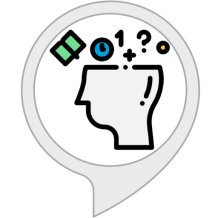

Some of the various Alexa skills we have created.
Adventure Craft: Tales from the Mine
Play Minecraft on Alexa with this unofficial interactive story. Manage your inventory, craft tools, and build things while exploring the world. Read details.
 Craft Helper – Unofficial Minecraft Assistant
Craft Helper – Unofficial Minecraft Assistant
Craft Helper is an unofficial Minecraft assistant that helps you find information without having to browse or search for it. Simply ask it your question based on the examples below and it will do it’s best to find that information for you. Read details.

Knowledge Quest
Knowledge Quest is an interactive game where you pick a topic, explore, and then get a quiz on what you’ve learned based on the difficulty you select. Read details.
Skill Language: US
 Minecraft Server List (Unofficial)
Minecraft Server List (Unofficial)
Looking for a new server for yourself or with your friends? Find a server by telling Minecraft Server List what type of server you like to play on. Read details.